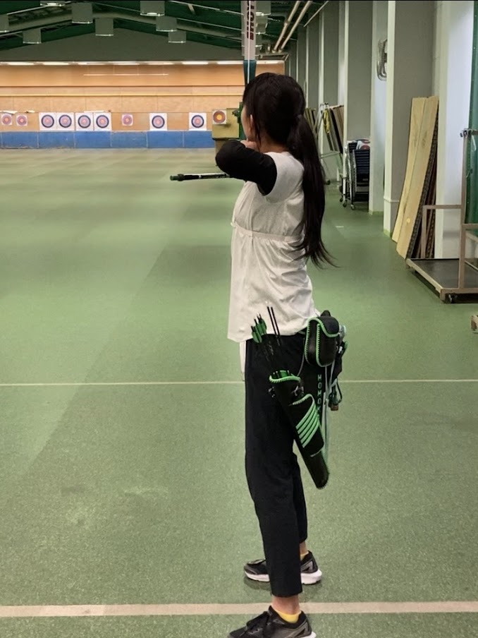

独文は先生方がとても真面目で、熱心なので、質問や相談に親身になって答えてくださいます。必修科目が多く、連動しているため１つでも落とせないのは厳しいと思いきや、真面目に頑張っていれば絶対にそんなことはないので不安になることはありません。独文科の歴史の中で卒業できなかった人は1人もいないらしいです。
アーチェリーって、すごくかっこいいなって見て思ってなんとなく始めました。最初はそんなにはっきりとした理由はありませんでした。
独文は毎授業後に必ず宿題(Hausaufgaben)が出るので、時間を見つけてやっておかないと大変！なので、私は学校に行く時電車に乗る時間が長い分、その時間を使ってやってました。(授業自体はオンラインの方が多かったのですが。)でも、部活に集中したかったので授業後すぐやってしまうことも多々ありました(宿題は知識定着のため。あえて少し時間おいてゆっくりじっくり解く方が個人的には良いと思います…)
「勝ち」にこだわりながらも、互いにいい雰囲気で、アーチェリーを楽しみながら切磋琢磨していける、そのような人たちばかりなところかと思います。日々の練習はストイックに、しかし部員同士のコミュニケーションも欠かさず、部全体の士気も高いのが良いところだと思います。
緑色が大好きで全て緑にしています。緑こそ至高です。性能より値段より緑色であることこそが重要なのです。
最近はLEGENDSアルセウスにはまってずっとやっています。モクローを進化させたくなくてずっとモクローのまま旅をしています。他にもピアノを弾いたりとか、でもやっぱり休みでもアーチェリーがしたくなる時はアーチェリーをしています。
オンライン授業、私はそんなに悪くはないかなと思います。先生方が教科書を共有しながら授業を進めてくださるのですが、黒板を使うよりこちらの方がわかりやすいと思います(後期から対面授業になった科目もあり、それと比べています)。ただ、やはり対面授業があるからこそ学科の子と仲良くなれるとも思いますのでそこはオンラインの弱点ではあるかなと。(独文に限って言えばクラスや学年の全体数が少ないのでオンラインでも仲良くなれるとは思いますが)
Windowsです。私は機械に明るくないので父親が選んでくれました。父曰く、Macは心許ないそうです。(iPhoneユーザーならこちらの方が良さそうですが。iPhoneユーザーなのに使っているパソコンはWindowsなので正直ファイルの移動には苦労してます。）
通信環境に左右されやすいので、授業中に途切れてしまうとなかなか大変です。1番困る例だと思います。
私は思っていたよりも大変な学生生活を送ってしまっています(コロナ禍で振り回されるというのもありますが)。ですので皆さんが心に思い描いた学生生活を送れるよう、心より願っています。何かあった時に頼れる存在を持つためにも何かサークルや部活に入ることをお勧めします。自身と同じことを楽しめる、頑張れる人ならきっとかけがえのない存在になってくれるでしょう。
